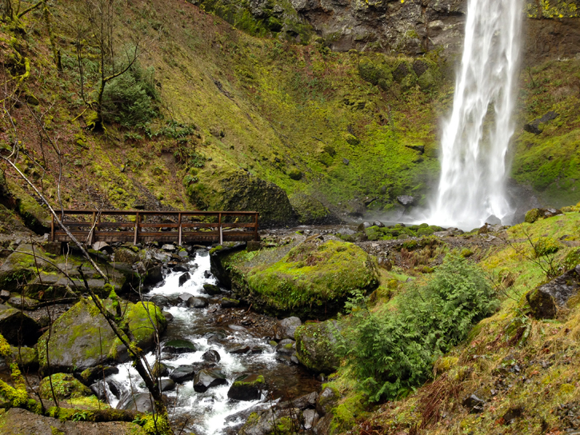

Elowah Falls
At Elowah Falls, McCord Creek crashes into a huge amphitheater made up of several distinct lava flows. This is a fairly easy hike, appropriate for most beginners. There is a small amount of climbing with a summit in the middle. Consider combining this hike with the Upper McCord Creek Falls Hike.
Plan Your Trip
Trail Aspects:
- Exertion: easy, 3.3 Miles Round-Trip
- Sights: Elowah Falls
- Popularity: Low
- Open: All (Closed durling winter storms)
Directions From Portland:
- Travel Time: Approximately 30 minutes (36 miles from downtown)
- Take I-84 E to exit 35
- At the stop sign, go left, then immediately right onto Frontage Rd
- Stay on this road for 2 miles to the Yeon State Park (just before the highway entrance)
